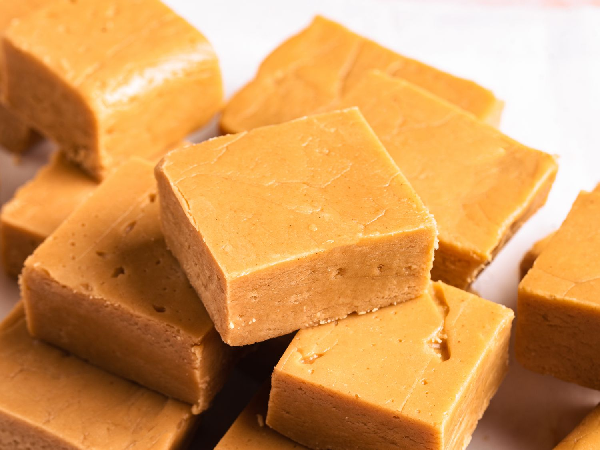

Fudge

Ingredients
- 150g Butter
- 410g Evaporated Milk
- 500g Caster Sugar
- 2 Teaspoons Vanilla Essence
Method
- Pour evaporated milk into a medium pot.
- Add the butter.
- Add caster sugar.
- Put stove on high heat and bring to a boil.
- Stir for 20 Minutes
- Put off heat when thick consistency.
- Whisk until for 10 minutes until sticky texture
- Add vanilla essence
- Whisk for another 5 minutes
- Greaseproof paper and flatten out.
- Leave 2.5 hours to set and store in fridge